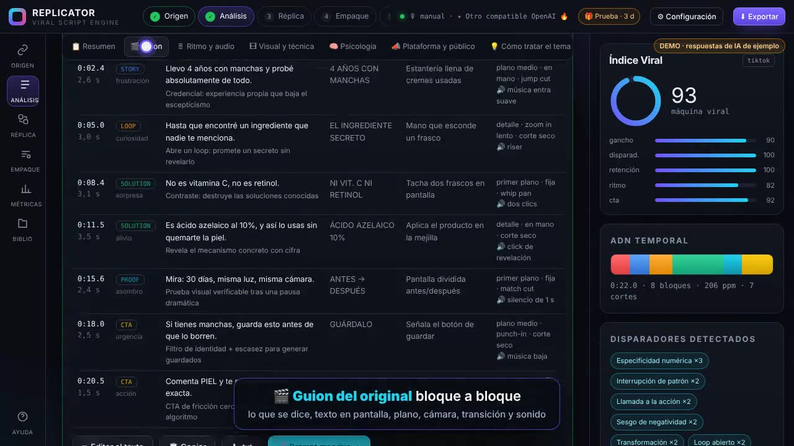
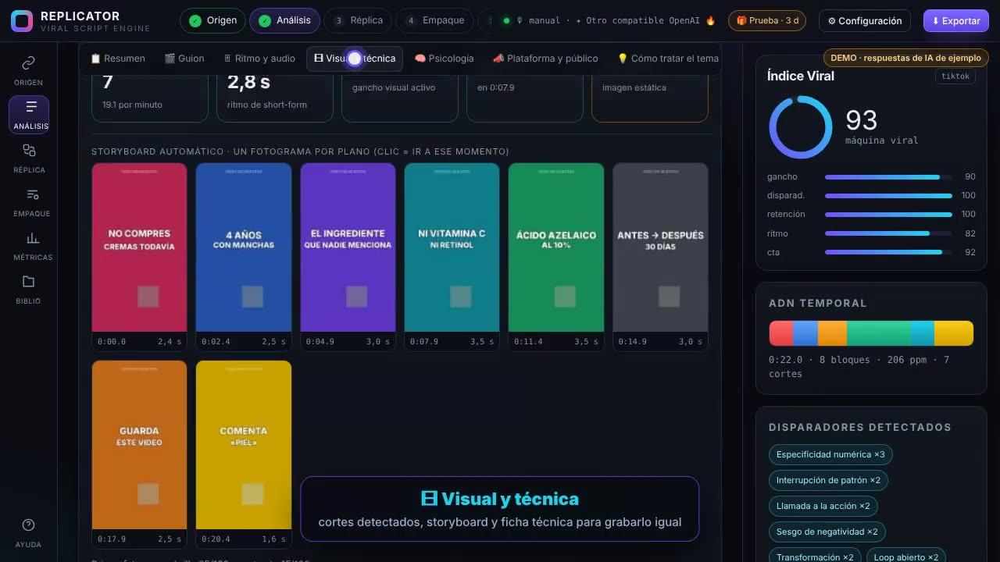
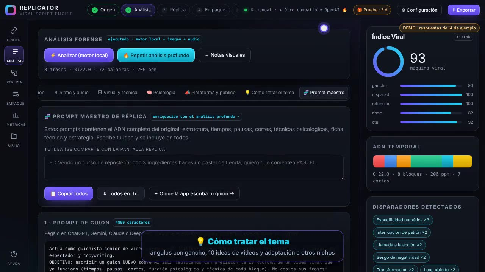
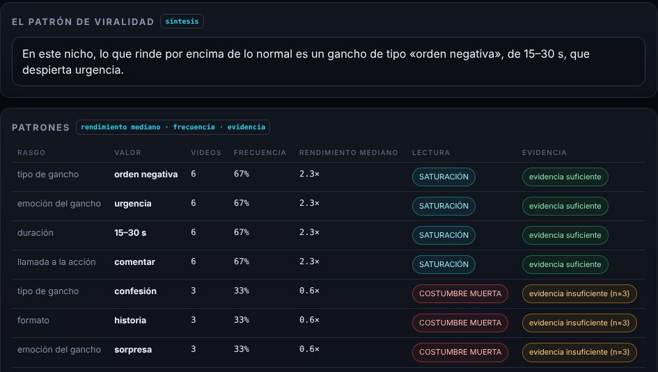

Desmonta lo viral.
Reconstrúyelo con tu idea.
REPLICATOR analiza un video que ya funcionó (archivo, enlace de YouTube o TikTok, o su guion) y te entrega su estructura completa: el guion, las pausas, los cortes, la psicología y la técnica. Después escribe tu guion con el mismo ADN y tu contenido.
Sin tarjeta. Todas las funciones durante 3 días. Funciona en tu PC con Chrome o Edge.
La estructura que REPLICATOR detectó en el video de la demo: 8 bloques en 22 segundos, con 2 pausas dramáticas.
De un video viral a tu guion, en tres pasos
Carga el original
Sube el video, pega un enlace de YouTube, TikTok, Facebook o Instagram, o pega el guion. Si algo no se puede sacar solo, la app te dice cómo conseguirlo.
Analízalo a fondo
Mide pausas reales y cortes de cámara fotograma a fotograma. La IA reconstruye el guion y explica la técnica y la psicología de cada bloque.
Replícalo con tu idea
Escribe de qué va tu video y recibe tu guion con los mismos tiempos, pausas y funciones, listo para grabar. O copia el prompt maestro.
El análisis completo, ordenado en 8 pestañas
Todo lo que se puede aprender de un video, separado por temas para que lo entiendas de un vistazo.
Veredicto, índice viral, potencial de réplica y la fórmula del video en una línea.
Bloque a bloque: lo que se dice, el texto en pantalla, plano, cámara, transición y sonido.
Pausas y silencios medidos en el audio real, y la velocidad de habla de cada bloque.
Cortes de cámara, storyboard automático y ficha técnica para grabarlo igual.
Tipo de gancho, 18 disparadores psicológicos con su momento exacto y el arco emocional.
Métricas, etiquetas ocultas de YouTube, comentarios del público y cómo publicar tu versión.
Ángulos con su gancho, 10 ideas de videos, preguntas del público y adaptación a otros nichos.
Prompts listos para ChatGPT, Gemini, Claude, Veo o Sora con todo el ADN del original.



Saber qué copiar, no solo cómo
Antes de replicar un video conviene saber si de verdad fue viral para su cuenta, y qué se repite en los que funcionan en tu nicho.
¿Fue viral para su cuenta?
Compara las vistas del video con la mediana de su cuenta. 500 mil vistas en una cuenta pequeña valen más que 600 mil en una enorme. Con YouTube se calcula solo y te sugiere los otros videos fuertes del canal.
La fórmula de tu nicho
Cruza varios videos y encuentra qué tipo de gancho, formato, duración y emoción se repiten en los que rinden más. Marca cada rasgo como oportunidad, saturación o costumbre muerta, y solo recomienda lo que tiene 5 videos o más detrás.
Tu guion, con tus palabras
Avisa si tu guion repite frases del original: se copia la estructura, no el texto. Y cada análisis dice con claridad lo que no puede saber, para que decidas con datos reales.

Úsalo en la IA que prefieras
Cada análisis genera cinco prompts con la estructura, los tiempos y la técnica del original. Los copias y los pegas.
Para que cualquier IA de chat escriba tu guion con la misma estructura.
Plan de rodaje, luz, B-roll y edición en CapCut.
Escena por escena, en inglés, para generadores de video.
La portada del video para una IA de imagen.
Plantilla para analizar cualquier video con una IA de chat.
Para quien vive de crear videos que venden
Pruébalo 3 días. Paga solo si te sirve.
La prueba incluye todas las funciones. Al terminar, eliges el plan y lo activas con un código.
Prueba gratis
- Todas las funciones
- Sin tarjeta ni registro
- Tus proyectos se conservan al activar
Mensual
- Análisis ilimitados
- Análisis profundo con IA y prompts maestros
- Actualizaciones incluidas
- Soporte por WhatsApp
De por vida
- Pago único, sin renovaciones
- Todo lo del plan mensual
- Todas las actualizaciones futuras
- Configuración asistida por WhatsApp
Antes de descargar
¿Qué necesito para usarla?
Un ordenador con Google Chrome o Microsoft Edge. La app es un solo archivo: lo descargas, lo abres y la primera vez un asistente te guía para configurarla.
¿Necesito pagar una IA aparte?
No. Funciona con IAs de capa gratuita como Google Gemini o Groq, o con Ollama instalado en tu PC. La app trae la guía para conseguir las claves gratis.
¿Funciona con enlaces de TikTok e Instagram?
Sí. Saca el título y la descripción del enlace, y para medir cortes y pausas te ofrece capturar la pestaña mientras se reproduce, subir el video guardado o marcarlos a mano.
¿Mis videos se suben a algún sitio?
No. Todo el análisis de audio e imagen se hace en tu equipo. Solo se envía a la IA que tú configures el texto necesario para el análisis.
¿Qué pasa cuando termina la prueba?
La app se bloquea y te muestra los planes. Al activar tu código vuelve a funcionar con todos tus proyectos guardados.
¿Es legal replicar otro video?
Replicas la estructura (ritmo, tipo de gancho, orden de los bloques), que no tiene derechos de autor. Graba siempre con tu voz, tu producto y tus pruebas; la app nunca copia las frases del original.
¿Funciona en el móvil?
Se abre en el móvil, pero las funciones de captura y de modelos locales solo funcionan en ordenador. Recomendamos usarla en PC.
¿Y si vivo en Cuba?
La app funciona igual. Algunos servicios de Google pueden necesitar una VPN; Ollama funciona sin internet una vez instalado.
Tu próximo video ya tiene estructura
Descarga REPLICATOR y analiza tu primer video viral hoy.